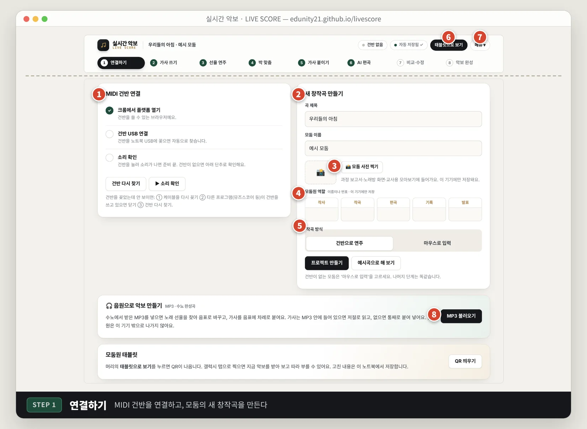
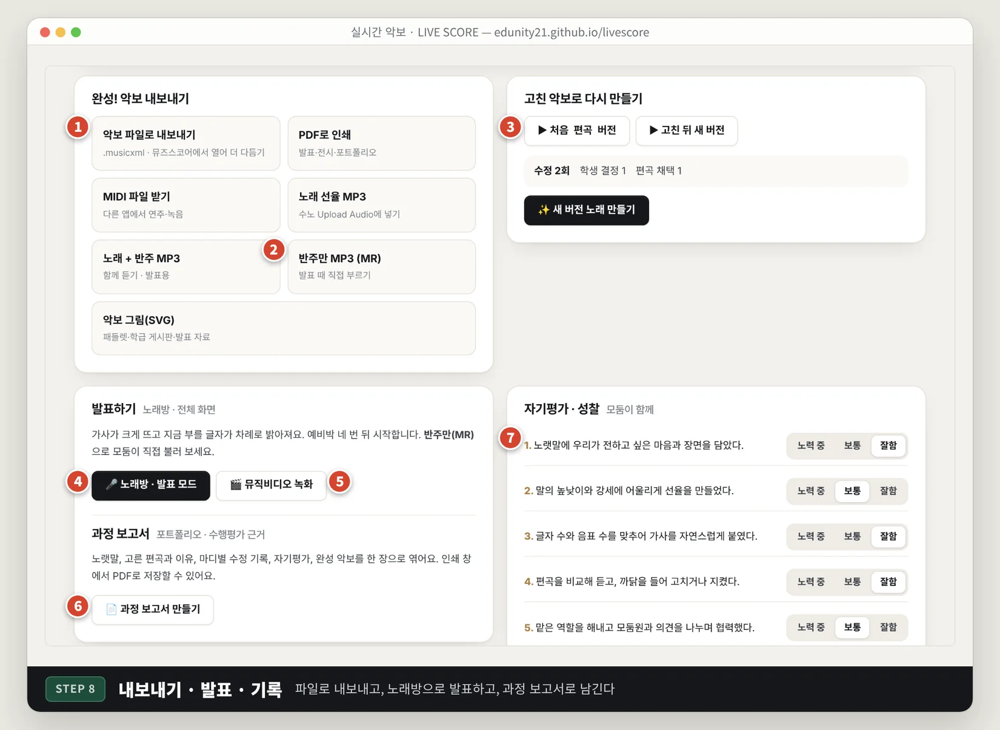

STEP 1
연결하기
MIDI 건반을 노트북에 꽂고, 모둠의 새 창작곡을 만들어요.

이렇게 해요
- 선생님이 연결한 노트북에서 세 칸(크롬 · 건반 USB · 소리 확인)이 모두 초록인지 봐요.
- 곡 제목과 모둠 이름을 쓰고, 역할 칸에는 이름 대신 번호를 써도 돼요.
- 📸 모둠 사진 찍기로 한 장! (원하지 않는 친구는 빼고 찍어요)
- 머리의 태블릿으로 보기 QR을 내 태블릿으로 찍어 우리 모둠 악보에 들어가요.
Student's Guide · 학생용
건반으로 친 선율, 흥얼거린 노래, 손짓과 그림이 그 자리에서 악보가 돼요. 반주는 우리가 연주할 수 있는 악기와 사람 수로 만들어지고, 무엇을 남기고 무엇을 고칠지는 우리 모둠이 정해요.
그림은 실제 화면이에요 · 그림을 누르면 크게 보여요. 빨간 번호는 선생님 설명 순서예요.
Listen
편곡 버전도, 내 버전도 끝까지 들어 본 뒤에 정해요.
Why
고를 때마다 이유 한 줄. 그게 우리 모둠의 기록이에요.
Respect
건반은 차례로, 의견은 끝까지 듣고 말해요. 사진·영상은 허락받고 찍어요.
AI가 만든 것을 그대로 내지 않아요. 우리가 듣고, 비교하고, 고친 흔적이 있어야 우리 노래예요. 다른 사람의 노래나 가사는 넣지 않아요.
다섯 명이 한 가지씩 맡아요. 차시마다 역할을 바꿔도 좋아요.
노랫말을 쓰고(2단계), 음표 아래 글자를 맞춰요(5단계).
건반·흥얼거림으로 선율을 만들고(3단계), 박을 맞추고 음을 다듬어요(4단계).
우리 편성과 장르·분위기를 고르고(6단계), 비교·수정을 이끌어요(7단계).
고른 이유와 고친 이유를 입력하고 수정 기록을 챙겨요(6·7단계).
노래방 모드로 발표하고, 처음 버전과 새 버전을 소개해요(8단계).
단계마다 ‘확인!’을 눌러 표시해요. 이 태블릿에만 저장돼요.
MIDI 건반을 노트북에 꽂고, 모둠의 새 창작곡을 만들어요.

이렇게 해요
노랫말을 쓰면 글자가 음절로 나뉘고, 한 줄이 두 마디가 돼요.

이렇게 해요
예비박 네 번 뒤 건반으로 노래를 치면 막대로 기록돼요. 흥얼거리거나 카메라로도 만들 수 있어요.

이렇게 해요
박에 맞추면 막대가 진짜 음표로 바뀌어요. 음을 고치고, 부르기 편한지 살펴요.

이렇게 해요
음표 아래 가사가 한 글자씩 붙어요. 어긋난 글자는 끌어서 바로잡아요.

이렇게 해요
우리가 연주할 악기와 사람 수를 정하면, 실제로 연주할 수 있는 편곡 세 버전이 만들어져요.


이렇게 해요
편곡 버전과 내 선율을 겹쳐 보고, 고를지 고칠지 직접 정한 뒤 이유를 남겨요.

이렇게 해요
노래와 반주가 함께 적힌 총보를 완성하고, 발표하고, 기록으로 남겨요.


이렇게 해요
건반이 없어도, 노래가 길어도, 오케스트라 곡이어도 할 수 있어요.
Audio
수노 MP3를 넣으면 노래 선율과 가사를 찾아 악보로 바꿔요. 틀린 음은 4·5단계에서 고쳐요. (1단계 · 메뉴)
Camera
손을 화면 위 칸에 넣거나, 종이에 그린 선율선을 비춰 선율을 만들어요. (3단계)
Tempo
지휘하듯 손을 크게 내리면 우리 노래의 빠르기를 찾아 줘요. (3단계)
Orchestra
오보에·호른·비올라·하프·팀파니까지! 학교 오케스트라가 연주할 수 있는 총보가 나와요. (6단계)
Video
카메라 화면 위에 가사 자막을 얹어 우리 노래를 녹화해요. (8단계)
MuseScore
악보 파일로 내보내 뮤즈스코어에서 다듬고, 다시 불러올 수 있어요. (8단계 · 메뉴)


사진·영상 약속 · 카메라 영상과 사진은 이 노트북 밖으로 나가지 않아요. 친구 얼굴이 나오는 사진·영상은 허락받고, 밖에 올리지 않아요.
7단계에서 고를 때마다 이유를 한 줄로 써요. 이렇게 세 조각을 이어 쓰면 쉬워요.
어디서+무엇이+어떻게 들려서 / 들리게 하려고
막히면 · 아래 낱말 은행에서 한 단어를 골라 넣어 보세요. 7단계 화면의 낱말 은행을 눌러도 들어가요.
음악을 설명할 때 쓰는 말이에요.
| 이럴 때 | 이렇게 해요 |
|---|---|
| QR로 안 들어가져요 | 와이파이 연결을 확인하고 카메라로 다시 찍어요. 그래도 안 되면 손을 들어요. |
| 건반을 눌러도 막대가 안 생겨요 | 1단계 세 칸이 초록인지 보고, 아니면 선생님께 알려요. 건반 다시 찾기를 눌러 봐요. |
| 흥얼거린 음이 안 잡혀요 | 조용한 곳에서 마이크 가까이 또렷하게 불러요. 메트로놈은 이어폰으로. |
| 카메라가 안 켜져요 | 카메라 권한을 허용했는지 보고, 밝은 곳에서 해요. |
| 가사 줄이 빨간색이에요 | 글자 수와 음표 수가 달라요. 한 음에 두 글자 또는 두 음에 늘이기를 써요. |
| 노래가 너무 높아요 | 4단계 음역 점검 · 조옮김에서 조를 낮추거나 한 옥타브 내려요. |
| 실수로 잘못 고쳤어요 | 되돌리기를 눌러요. 더 앞으로 돌아가려면 메뉴의 작업 기록 보기 · 되돌리기. |
| 모둠 의견이 갈려요 | 두 쪽을 다 들어 보고, 각자 이유를 한 줄씩 말한 뒤 정해요. |